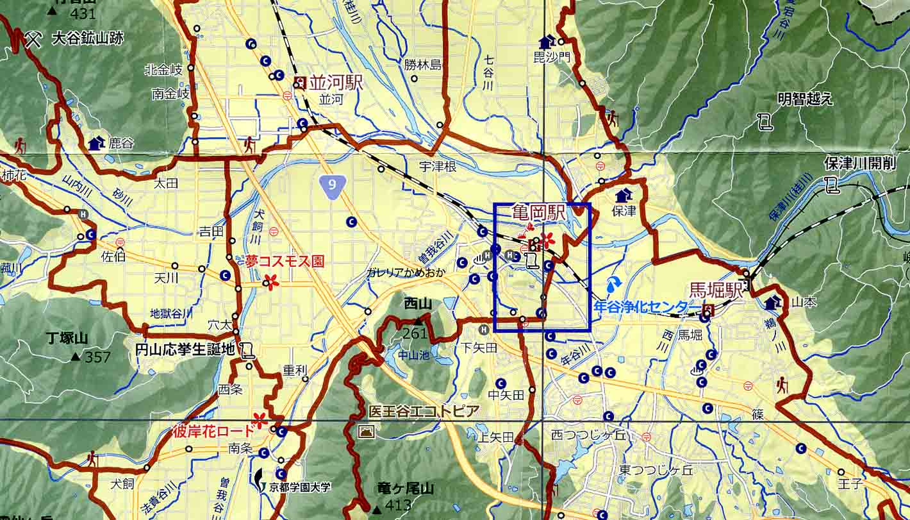
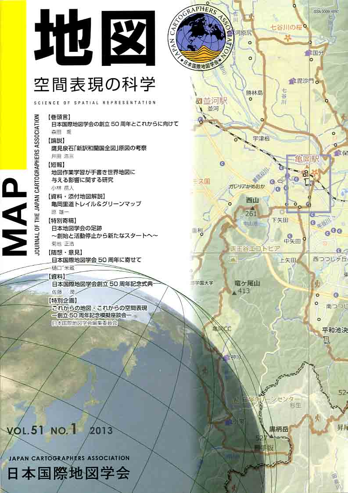
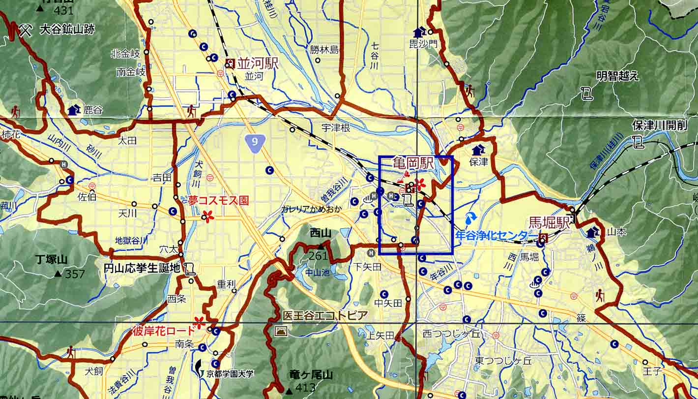

≪No.51 No.1 添付地図≫


本図を許可なく複製・利用することを禁止します。
| 最 新 号 | バックナンバー | 添付地図目録 | 投 稿 規 程 |
Vol.51 No.１ （通巻２０１号） ２０１３年
| 【巻頭言】 | 日本国際地図学会の創立50周年とこれからに向けて | 森田 喬 |
| 【論説】 | 鷹見泉石「新訳和蘭国全図」原図の考察 | 井田浩三 |
| キーワード：洋学史、蘭学史、地図史、オランダ地図 | ||
| 【短報】 | 地図作業学習が手描き世界地図に与える影響に関する研究 | 小林岳人 |
| キーワード：地理教育、地図教育、地図作業学習、手描き世界地図、定期考査 | ||
| 【資料・添付地図解説】 | 亀岡里道トレイル＆グリーンマップ | 原 雄一 |
| キーワード：亀岡、トレイル、グリーンマップ、道普請、里道開削 | ||
| 【特別寄稿】 | 日本地図学会の足跡 〜創始と活動停止から新たなスタートへ〜 | 菊地正浩 |
| 【随想・意見】 | 日本国際地図学会50周年に寄せて | 樋口米蔵 |
| 【資料】 | 日本国際地図学会創立50周年記念式典 | 佐藤 潤 |
| 【特別企画】 | これからの地図・これからの空間表現 −創立50周年記念模擬座談会− | 日本国際地図学会 編集委員会 |
| 【書評・紹介】 | 地図でみる東日本の古代 | 熊木洋太 |
| 【特別会員名簿】 | ||
| 【学会記事】 | ||
| 【添付地図】 | かめおか里道トレイル＆グリーンマップ | |
|
≪No.51 No.1 表紙≫ |
|
|  |
|
|
|
≪No.51 No.1 添付地図≫ |
|
 本図を許可なく複製・利用することを禁止します。
|